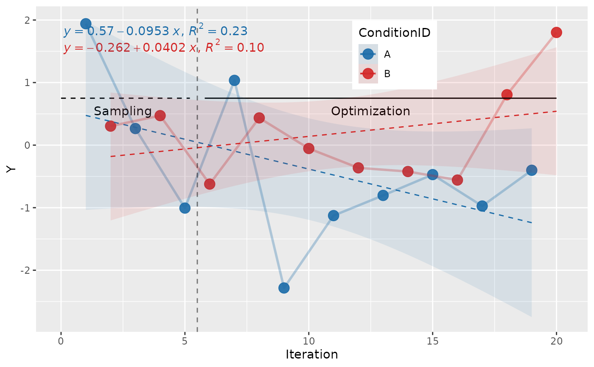
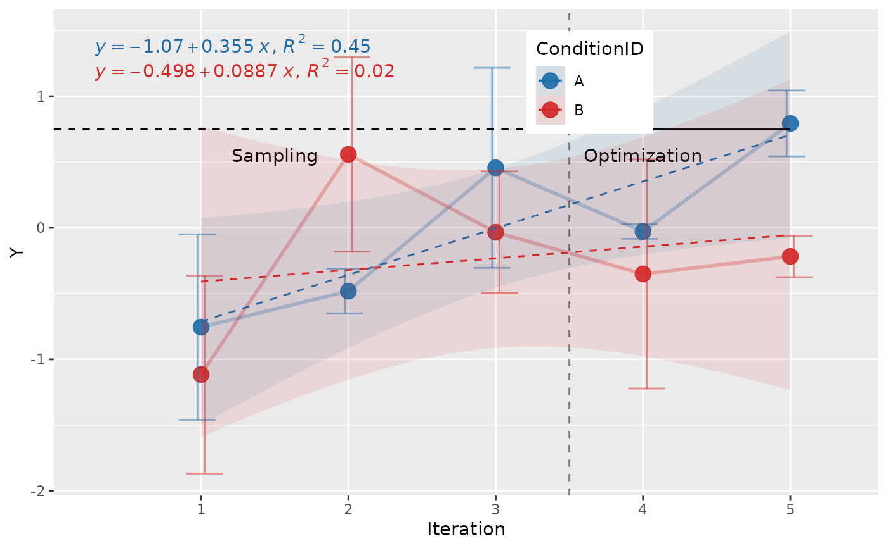

Generate a Multi-objective Optimization Plot
Source:R/plotting.R, R/zzz-aliases.R
generateMoboPlot.RdThis function generates a multi-objective optimization plot using ggplot2. The plot visualizes the relationship between the x and y variables, grouping and coloring by a fill variable, with the option to customize legend position, labels, and annotation of sampling and optimization phases.
Usage
generateMoboPlot(
data,
x,
y,
fillColourGroup = "ConditionID",
ytext,
legendPos = c(0.65, 0.85),
numberSamplingSteps = 5,
labelPosFormulaY = "top",
verticalLinePosY = 0.75
)
plot_mobo(
data,
x,
y,
fillColourGroup = "ConditionID",
ytext,
legendPos = c(0.65, 0.85),
numberSamplingSteps = 5,
labelPosFormulaY = "top",
verticalLinePosY = 0.75
)Arguments
- data
A data frame containing the data to be plotted.
- x
A string representing the column name in
datato be used for the x-axis. Can be either numeric or a factor whose labels are numbers; it is plotted on a continuous axis either way, so the data, the phase guides and the fitted equation all refer to the iteration values (not to factor positions).- y
A string representing the column name in
datato be used for the y-axis. This should be a numeric variable.- fillColourGroup
A string representing the column name in
datathat defines the fill color grouping for the plot. Default is"ConditionID".- ytext
A custom label for the y-axis. If not provided, the y-axis label will be the title-cased version of
y.- legendPos
A numeric vector of length 2 specifying the position of the legend inside the plot. Default is
c(0.65, 0.85).- numberSamplingSteps
An integer specifying the number of initial sampling steps before the optimization phase begins, counted in iteration steps from the first iteration (the spacing being the smallest gap between iterations), so it also works when iterations start at 0 or are spaced by more than 1, and a missing iteration does not move the boundary. A value that covers every iteration in the data gives a warning. Default is 5.
- labelPosFormulaY
A string specifying the vertical position of the polynomial equation label in the plot. Acceptable values are
"top","center", or"bottom". Default is"top".- verticalLinePosY
A numeric value of the y-coordinate where the "sampling" and "optimization" line should be drawn.
Naming
plot_mobo() is the spelling used throughout the documentation and
the one to prefer in new code: the report_* / plot_* / check_* prefixes
make the API discoverable through autocomplete.
generateMoboPlot() ![[Superseded]](figures/lifecycle-superseded.svg) is the original
name. Both names refer to the same function object, so they are entirely
interchangeable; the original remains fully supported and is not scheduled
for removal, and existing scripts keep working unchanged.
is the original
name. Both names refer to the same function object, so they are entirely
interchangeable; the original remains fully supported and is not scheduled
for removal, and existing scripts keep working unchanged.
Examples
library(ggplot2)
library(ggpmisc)
#> Loading required package: ggpp
#>
#> Attaching package: ‘ggpp’
#> The following object is masked from ‘package:ggplot2’:
#>
#> annotate
# Example with numeric x-axis
df <- data.frame(
x = 1:20,
y = rnorm(20),
ConditionID = rep(c("A", "B"), 10)
)
generateMoboPlot(df, x = "x", y = "y")

# \donttest{
# Example with factor x-axis
df <- data.frame(
x = factor(rep(1:5, each = 4)),
y = rnorm(20),
ConditionID = rep(c("A", "B"), 10)
)
generateMoboPlot(df, x = "x", y = "y", numberSamplingSteps = 3)

# }